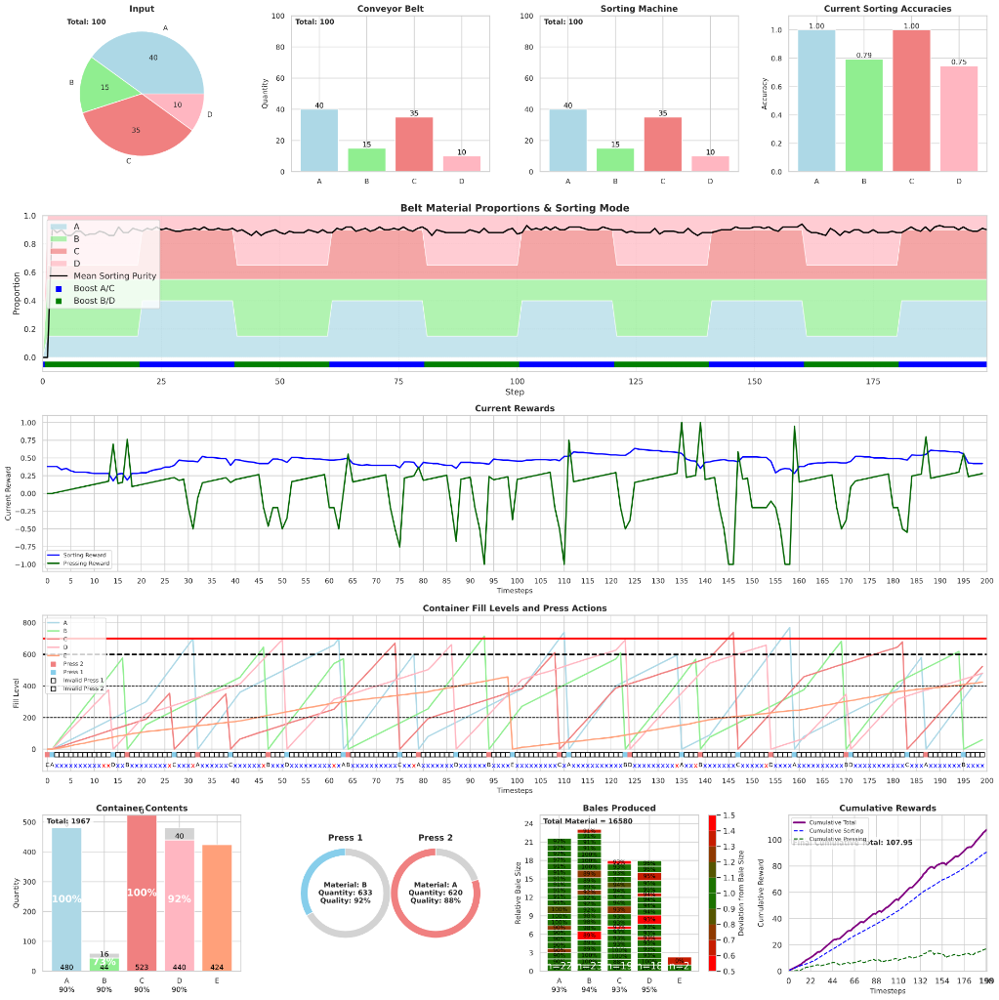

FaultBench-Industrial
Documentation for a controlled benchmark of self-healing mechanisms in multi-agent industrial control.
Overview
This site is the detailed experimental record for a research project comparing four recovery-mechanism paradigms under a standardized industrial fault-injection suite. The project is framed as a controlled, apples-to-apples comparison on the same multi-agent system, with the same fault classes and the same evaluation metrics.
Research question
Under a standardized industrial fault-injection suite covering sensor noise, actuator degradation, agent dropout, communication loss, and Byzantine/adversarial agents, how do reactive rule-based reconfiguration, fault-tolerant-trained MARL, hierarchical supervisor-agent intervention, and LLM-agent-based replanning compare in time-to-recovery, performance-degradation area, false-recovery rate, and safety-violation count?
Fault-injection suite
| Fault | Injection semantics |
|---|---|
| Sensor noise | Corrupts local observation vectors via additive noise, scale bias, or zeroed sensory inputs. |
| Actuator degradation | Attenuates physical action execution, capping motor output or introducing mechanical delays. |
| Agent dropout | Completely zeros out an agent's participation, simulating node hardware crash or power loss. |
| Communication loss | Drops inter-agent messages and state synchronization signals, forcing uncoordinated local execution. |
| Byzantine / adversarial agents | Swaps cooperative policy for an adversarial policy taking counter-productive or malicious actions. |
Recovery mechanisms
| Mechanism | Paradigm |
|---|---|
| Rule-based reconfiguration | Fixed or detected heuristics for restoring operation. |
| Fault-tolerant-trained MARL | Policies trained or fine-tuned with faults injected during training. |
| Hierarchical supervisor-agent | An additional agent monitors others and intervenes when recovery is required. |
| LLM-agent replanning | An LLM reads structured system state and produces a recovery plan through environment control tools. |
Evaluation metrics
The planned scorecard records time-to-recovery, degradation-area, false-recovery rate, and safety-violation count. Multiple random seeds are required for defensible empirical comparison.
Normal state baseline
System trajectory under standard operation without any injected faults or active recovery mechanisms.

Results archive
The results area is structured around one page per fault, fault duration mode, and recovery mechanism. This allows graphs that do not fit into the paper to remain available as a complete experimental record.